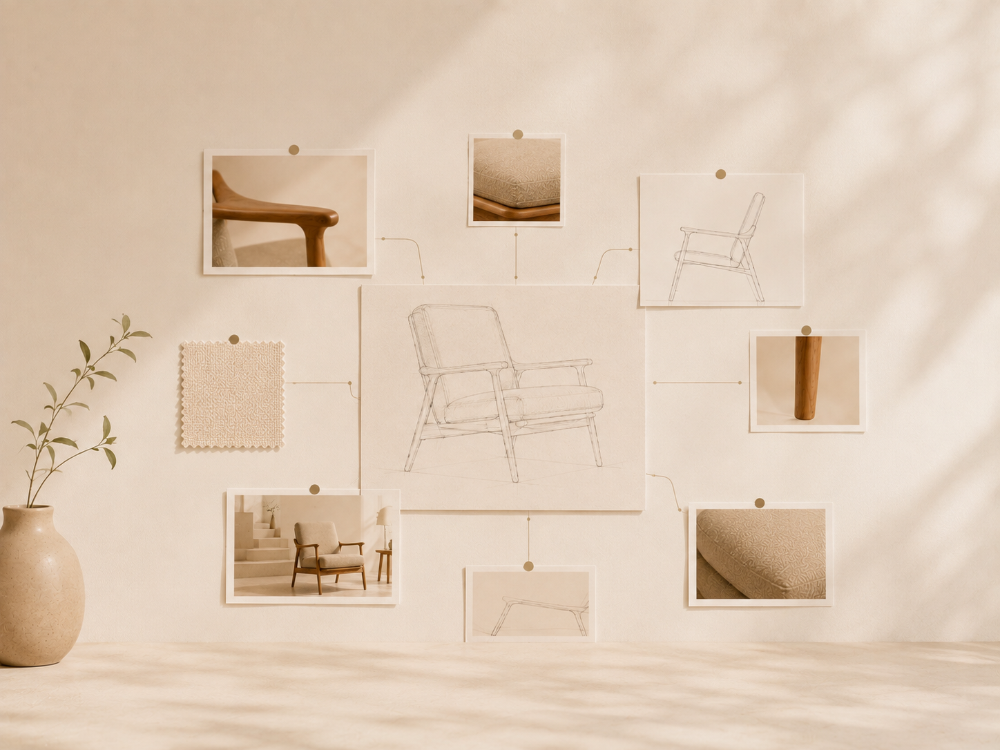
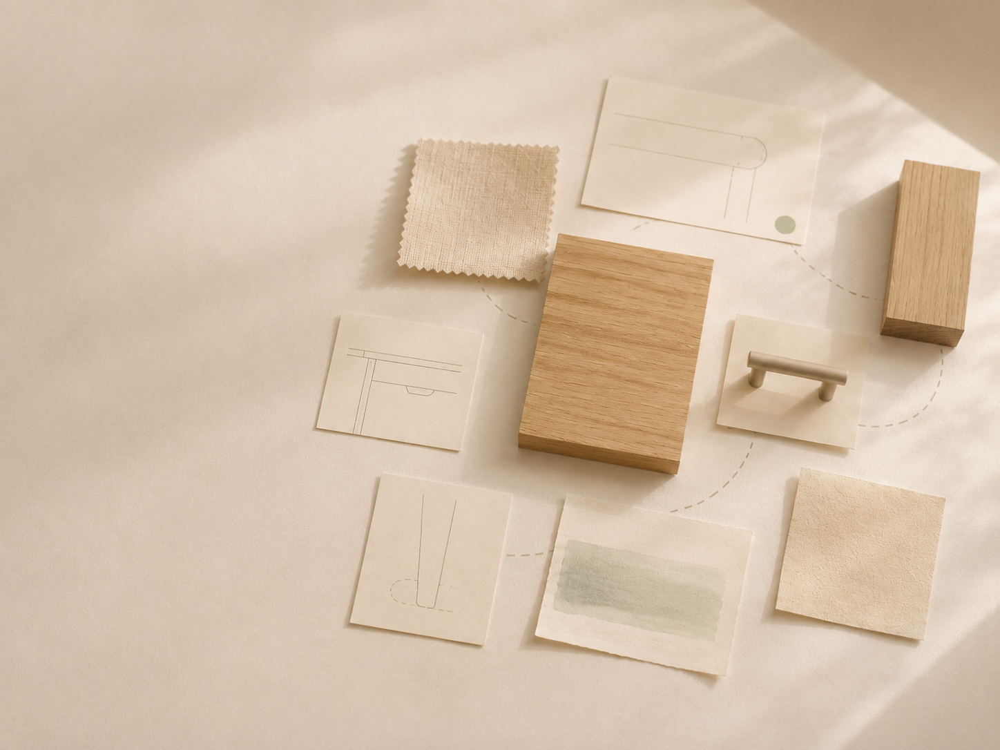
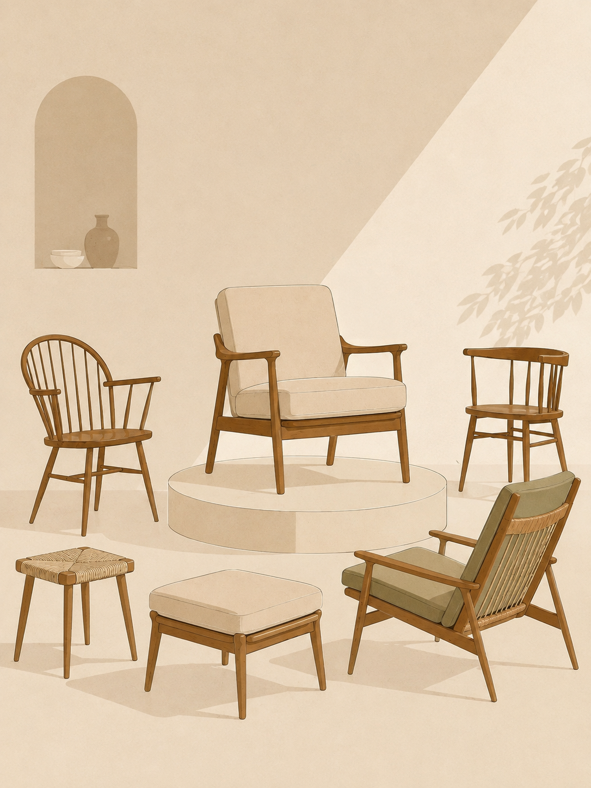
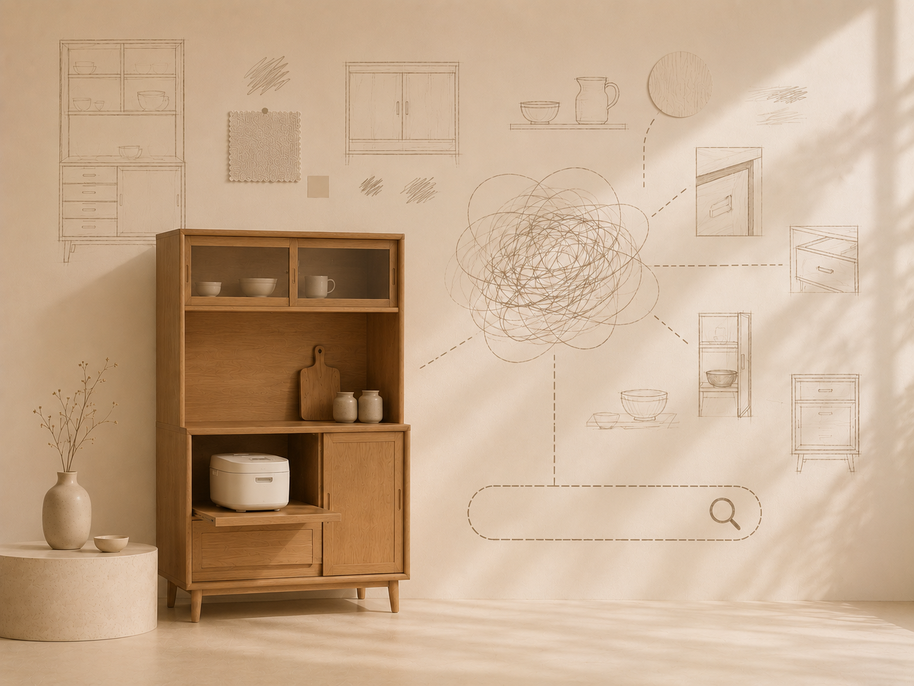

名前がわからない
見たことはあるのに、 家具の名前や種類がわからないことがあります。

家具には名前があります。
しかし私たちは、名前ではなく、形や記憶、特徴、暮らしの印象で覚えていることも少なくありません。
Furnaは、その「あの家具」を見つけるための家具探索サービスです。

見たことはあるのに、 家具の名前や種類がわからないことがあります。

形や特徴、用途は覚えていても、 検索するための言葉がわからないことがあります。

探している家具に近い候補があっても、 正式な名称や家具の背景までたどり着きにくいことがあります。
Furniture Name Discovery
名前がわからない家具について、 形・特徴・用途・暮らしの状況などを手がかりに、 家具の一般名称や種類を探します。
Iconic Furniture Discovery
見たことのある家具について、 覚えている形・素材・特徴・使われ方などを手がかりに、 候補となる名作家具を探します。
どちらの探索でも、家具の名前そのものを知っている必要はありません。
記憶や特徴、用途など、覚えていることから探索を始められます。
家具を探す。 家具を知る。 暮らしを好きになる。
Furnaは、家具探索サービスから、
家具と暮らしをつなぐ家具探索プラットフォームへ。
より多くの人の「好きな暮らし」を支えていきます。
Furnaで、あなたの「探していた家具」に出会いましょう。